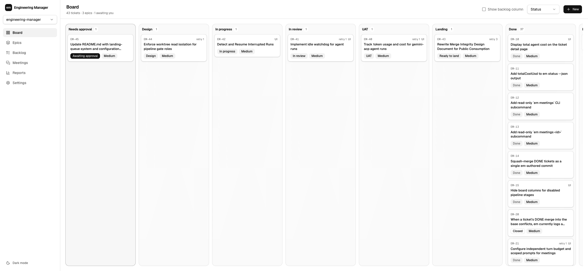

An engineering org that runs on your laptop.
emorg turns a request into a ticket and drives it through PM, architect, developer, reviewer, and UAT agents, each in its own locked-down session. Work only counts as done when an independent review passes, UAT passes against the running app, and the merge lands verified on your base branch.
npm install -g emorg
em initFailures loop back with the exact defect report. Merges that conflict or fail verification park honestly instead of lying.
Separation of duties
The reviewer cannot edit.
Its session has no write tools at all. It judges the diff and nothing else.
The developer cannot grade itself.
Verdicts come only from gate roles it never controls.
Gates cannot look outside.
Reviewer and UAT reads are mechanically denied outside the ticket's worktree. Enforced by the permission layer, not by prompt.
DONE cannot lie.
Parallel agents produce parallel branches, and merge-on-green corrupts them. emorg lands one ticket at a time through a serialized queue: sync the branch with the current base, re-run your verify command against the merged tree, squash, and advance the base fast-forward only. A conflict or a failed verification parks the ticket as NEEDS_INTEGRATION for a human. With a verifyCommand set, the base branch only ever moves to a commit that passed your tests as merged.
"verifyCommand": "npm test"Runs on the subscriptions you already pay for.
Roles map to providers per your config: Claude for the builders, Codex on your ChatGPT plan, Gemini flash for the PM, or any agent that speaks ACP or that opencode fronts. Every agent run records its real tokens and dollars, per role, per model, per provider, including failed and cancelled runs. em report shows where the money went, next to delivery: lead times, first-pass rate, and the defects your gates caught before they reached you.
role runs tokens usd
uat 37 99,639,182 77.62
developer 55 94,272,351 83.52
reviewer 53 21,439,370 32.34
architect 44 9,644,530 69.50
pm 70 4,811,485 14.41
planner 5 0 0.00
total 264 229,806,918 277.38emorg built emorg. This is the org's own ledger, all time; the dashboard shows the same odometer live.
Caps, not just meters: per-ticket budgets block a runaway ticket, and escalation ladders pay for the premium model only on work the cheap one demonstrably failed.
It respects the machine it runs on.
- Bounded concurrency: agent slots cap simultaneous sessions and browsers.
- Idle watchdog: a stalled agent stream is cut after 15 silent minutes, recorded, and fed through the stage's normal failure path.
- Crash recovery: interrupted runs are swept on the next start, flagged in
em status, and resumable with one command. - Sleep assertions: the machine is held awake for exactly the lifetime of a run, on macOS and Linux. Windows support is experimental.

Meetings put you in a room with your org: pressure-test an approach with the architect, talk by voice if you like, and the minutes mint the agreed action items as draft tickets.
Quickstart
npm install -g emorg
cd your-project && em init
em new "Add a dark mode toggle to the settings page"
em run EM-1 # PM drafts criteria, stops for you
em approve EM-1 # design -> build -> review -> UAT -> landEpics decompose big goals into dependency-ordered subtickets and build them in parallel. Custom gates are a markdown file away.
Already living in an agent?
em is also an MCP server. One line lets Claude Code hand work to the org, follow the pipeline, and pull reports, with every approval still routed to you.
claude mcp add em -- em mcp